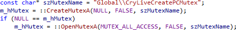

Enhanced Syntax Coloring
Extend the basic coloring of the IDE,
with coloring based on symbol definitions and context. In the Light theme, variables are dark blue, methods are brown, and preprocessor macros are purple.

Specify alternate colors in the options dialog of Visual Assist.
Learn more.